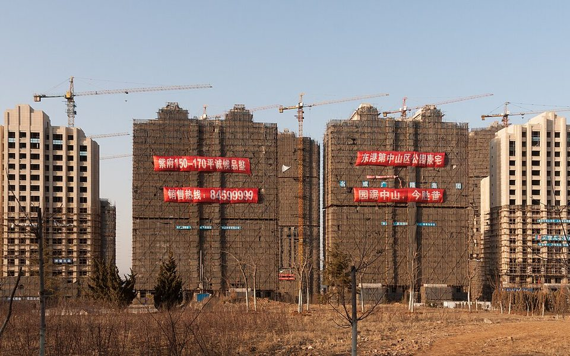
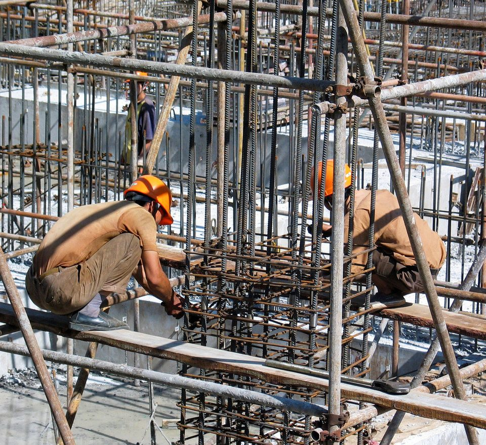

DOWNSTREAM DEMAND · CHINA PROPERTY · 2026 Q3
中國房市第三季：新開工跌兩成五、二手房反超新房，8·28 新政改寫遊戲規則
鋼鐵潮流工作室 · 發布 2026.10.07

本期重點
2026 年第三季，中國房地產仍在下行，而且跌幅比上半年更深：前 8 月開發投資年減 19.9%、新開工面積年減 24.8%，兩項都比 1–6 月再擴大。真正的變化在制度面。8 月 28 日中國同步推出銷售制度與房貸制度改革，預售門檻提高、新地優先現房銷售，預售屋的房貸改在竣工後才撥款；9 月底再宣布由中央財政補貼首套房貸利息。對鋼鐵業來說，這一季確認了一件事：房地產已經不是用鋼的成長來源，而是持續縮小的基本盤。
- 量：前 8 月新建商品房銷售面積 4.99 億平方米、年減 12.1%；二手房網簽面積 5.49 億平方米、年增 10.6%，首度由官方公布，已經超過新房。
- 價：8 月 70 城新房價格，一線城市月增 0.1%，二、三線城市續跌；二手房 70 城中有 62 城月跌。
- 錢：前 8 月房企到位資金年減 21.0%，其中國內貸款年減 33.3%，資金面比銷售面更緊。
- 9 月：中指研究院統計，百強房企 9 月銷售 2,421 億元，比 8 月增加 288 億元；但克而瑞重點 50 城新房成交面積年減 20.1%，「金九」只是月增、年比仍弱。
國家統計局 9 月房地產數據預計 10 月中下旬公布。本文以 7、8 月官方數據，加上 9 月民間機構統計與政策進展，做第三季的階段盤點。
關鍵數字
開工與投資：跌幅一路擴大
2026 年累計年增率（%）。三條線都在往下走，代表跌幅仍在擴大，尚未見底。資料來源：國家統計局。
把今年 5 到 8 月的累計數據排在一起，三項指標同步惡化。開發投資的年減幅度從 1–5 月的 16.2% 擴大到 1–8 月的 19.9%；新開工面積從年減 22.6% 擴大到 24.8%；新房銷售面積也從年減 10.8% 擴大到 12.1%。跌幅最大的始終是新開工，這是建築用鋼最直接的需求來源。
用累計數相減，可以推算出單月的量。第三季前兩個月，單月新開工面積只剩約 3,200 到 3,500 萬平方米，單月開發投資約 4,900 億元，銷售面積約 4,900 萬平方米。投資與銷售在 7、8 月幾乎持平，新開工 8 月還比 7 月少約 8%，沒有出現季節性回升。
| 單月推算 | 6 月 | 7 月 | 8 月 |
|---|---|---|---|
| 開發投資 | 7,718 億元 | 4,935 億元 | 4,970 億元 |
| 新開工面積 | 5,310 萬㎡ | 3,461 萬㎡ | 3,194 萬㎡ |
| 新房銷售面積 | 8,820 萬㎡ | 4,881 萬㎡ | 4,859 萬㎡ |
以國家統計局 1–5、1–6、1–7、1–8 月累計值相減推算。6 月是半年結算月，數值本來就偏高，不宜直接與 7、8 月比較；統計局會修正上年基數，因此本表不列單月年增率。
資金：房企錢比買家更緊
前 8 月房企到位資金 5.09 兆元、年減 21.0%，跌得比銷售額的 13.0% 更深。拆開來看，國內貸款年減 33.3% 最嚴重，自籌資金年減 20.0%，定金及預收款年減 14.8%，個人按揭貸款年減 22.4%。
銀行放款收縮，代表金融機構對房企的信用風險仍然保守。這一季的債務案例也印證這點：萬科今年仍在逐筆和債權人協商境內債展期，4 月公布的一筆 20 億元中期票據方案，是先付四成、其餘六成展期一年。房企沒錢，就不會買地、不會開工，這是新開工持續探底的根本原因。
房價：一線城市止跌，其餘續跌
| 70 城房價 | 7 月 月增 | 8 月 月增 | 7 月 年增 | 8 月 年增 |
|---|---|---|---|---|
| 新房・一線 | 0.0% | +0.1% | −1.1% | −0.9% |
| 新房・二線 | −0.1% | −0.1% | −2.8% | −2.7% |
| 新房・三線 | −0.3% | −0.2% | −4.2% | −4.1% |
| 二手・一線 | +0.2% | +0.1% | −3.7% | −2.7% |
| 二手・二線 | −0.3% | −0.3% | −5.1% | −4.9% |
| 二手・三線 | −0.4% | −0.3% | −5.8% | −5.6% |
資料來源：國家統計局 70 個大中城市商品住宅銷售價格變動情況。9 月數據尚未公布。
第三季的房價出現兩個訊號。第一，一線城市新房 8 月月增 0.1%，二手房 7、8 月都上漲，年減幅度逐月縮小；不過一線內部也有分化，上海新房月增 0.4%，北京仍月跌 0.2%。第二，止跌只停留在一線城市。8 月 70 城中，新房月跌的有 49 城，二手房月跌的有 62 城，二、三線城市仍在緩慢下修。
這種「一線先穩、低線續跌」的格局，對鋼鐵需求的含意很直接：一線城市土地稀少，就算房價回穩，新增開工量也有限；真正決定建築用鋼量的，是過去大量開發的二、三線城市，而那裡的庫存與價格壓力都還沒解除。
交易結構：二手房正式反超
9 月 15 日，國家統計局第一次公布二手房網簽面積：前 8 月 5.49 億平方米、年增 10.6%，超過同期新房的 4.99 億平方米。統計局發言人的說法是，市場正從以新房交易為主，轉向以存量房交易為主。克而瑞的城市統計更明顯：9 月重點 20 城二手房成交約 1,411 萬平方米、年增 3.1%，規模約為重點 50 城新房的 1.4 倍。
這個轉變對鋼鐵業是結構性的利空。二手房成交再熱，也只是既有房屋換手，不會產生新的鋼筋、型鋼需求；頂多帶動裝修、家電與五金，用到的是少量的鍍鋅鋼板與不鏽鋼。房地產對鋼鐵的拉動，正從「蓋房子」退到「住房子」。
9 月：金九有月增、無年增
民間機構的 9 月數據呈現「月增、年減」。中指研究院統計，百強房企前 9 月銷售總額 22,597.2 億元，9 月單月 2,421 億元，比 8 月的 2,133 億元多出 288 億元；銷售額破千億的房企剩 5 家，比去年同期少 1 家，破百億的剩 51 家、少 8 家。克而瑞則統計，重點 50 城 9 月新房成交約 1,020 萬平方米，月增 2.4%，但年減 20.1%。
前十名幾乎都是央企與地方國企。克而瑞指出，前 20 大房企中有 16 家是國有背景。多數民營房企仍在債務重整或收縮規模，市場集中到少數資金充裕的國企手上，新開工的總量自然難以回升。
政策：8·28 改的是規則，不是救市
- 8/28銷售制度與房貸制度改革同日發布
- 9/15統計局首度公布二手房網簽面積
- 9/24北京率先公布現房銷售細則
- 9/29三部門公布首套房貸貼息
- 9/30廣州細則：定金不超過房價 5%
- 10/1房貸貼息上路
- 10/1–8國慶黃金周，多地看房量回升
- 10 月9 月官方數據預計中下旬公布
中央政策與數據地方細則即將發生
8 月 28 日是這一季最重要的日子。住房和城鄉建設部、自然資源部與金融監管總局印發《關於完善商品住房銷售制度的通知》：預售項目必須單棟主體結構封頂，購房款全數存入監管帳戶；新出讓的土地優先採取現房銷售，並推動交房即交證。同一天，人民銀行與金融監管總局印發房地產信貸管理改革意見，個人房貸最長期限放寬到 40 年，同時規定新房在現房銷售後才撥貸，預售項目則要等竣工備案後才發放貸款。
這兩份文件合起來，等於從制度上動搖中國房地產實行了約 30 年的預售與高周轉模式。以前房企拿地後盡快開工、達到預售條件就開賣，用買家的頭期款與銀行按揭撥款去蓋下一個案子。新制下，房企必須自己出錢把房子蓋到封頂甚至完工，才收得到大部分房款。各地細則陸續出爐，北京、廣州都以 8 月 28 日為分界，之前已取得建設工程規劃許可證的項目沿用舊規，之後的新項目適用新制。新制目前以「優先」「鼓勵」現房銷售為主，並非一律強制。
9 月 29 日，財政部、人民銀行與金融監管總局再公布居民購房貸款貼息，10 月 1 日起實施：以新辦商業房貸購買首套住房，建築面積 120 平方米以內、總價 150 萬元以下，按貸款本金由財政每年補貼 1 個百分點的利息，每戶貼息貸款上限 100 萬元，最長補貼 5 年；中央負擔九成、地方一成，政策期限先訂一年。據普睿數智雲（PTI）監測的 107 個城市，今年新房成交中約 35.5% 同時符合面積與總價條件。以 100 萬元貸款計算，每年可省約 1 萬元利息，月付大約少 800 多元。國慶假期期間，武漢、佛山等地官方與平台數據顯示看房與成交量回升，但多屬單一城市、單一平台的資料，效果還要看 10 月全月數字。

對鋼鐵業的意涵
- 新開工少了近一億平方米，等於少吃數百萬噸鋼。 前 8 月新開工面積比去年同期少了約 9,900 萬平方米。中國高層住宅多為鋼筋混凝土剪力牆結構，每平方米建築面積約用 40–60 公斤鋼筋。粗估這部分減少的用鋼量約 400–600 萬噸，這些用量原本會在開工後一到兩年的主體施工期陸續發生，主要是螺紋鋼與線材。這是本站依工程經驗的估算，不是官方統計。
- 現房銷售短期壓抑開工。 房企要先墊錢蓋到封頂才能預售，按揭款要等竣工才撥付，資金周轉期拉長。在房企貸款已經年減三成的情況下，新制會讓房企更謹慎拿地與開工。中長期好處是爛尾風險降低、施工節奏較平穩，但短期對建築用鋼是減量。
- 貼息救的是庫存，不是開工。 首套房貸貼息有助消化 7.53 億平方米的待售新房，以及已在施工、即將竣工的項目。這些房子的鋼材早就用掉了，所以貼息對鋼材需求的拉動有限，最多讓停工項目較快復工收尾。
- 建築用鋼占比續降，長材出口壓力不減。 冶金工業規劃研究院預估，2026 年中國建築業用鋼約 3.84 億噸、年減 4.1%，全國鋼材需求 8 億噸、年減 1.0%；市場報導指出，建築用鋼占中國鋼材消費比重已從 2020 年約 58% 降到 2025 年約 49%，首度低於製造業。內需撐不住的螺紋鋼、線材會轉往出口，亞洲長材價格與台灣鋼筋業者仍要面對中國貨的競爭。
觀察重點
- 10 月中下旬國家統計局公布 1–9 月房地產數據與 9 月 70 城房價：新開工年減能否止於 25% 附近，一線城市房價能否連漲。
- 房貸貼息第一個月的效果：10 月新房成交能否擺脫年減兩成的格局。
- 各地現房銷售細則落地進度，以及房企拿地是否因此再放緩。
- 螺紋鋼表觀消費與社會庫存：第四季趕工期的需求能否接住鋼廠產量。
延伸閱讀
資料來源
- 2026 年 1–8 月份全國房地產市場基本情況（國家統計局，2026-09-15）
- 2026 年 1–7 月份全國房地產市場基本情況（國家統計局，2026-08-17）
- 2026 年 1–6 月份全國房地產市場基本情況（國家統計局，2026-07-15）
- 2026 年 1–5 月份全國房地產市場基本情況（國家統計局，2026-06-16）
- 國家統計局解讀 2026 年 8 月份商品住宅銷售價格變動情況（國家統計局，2026-09-15）
- 國家統計局解讀 2026 年 7 月份商品住宅銷售價格變動情況（國家統計局，2026-08-17）
- 70 城房價數據出爐，二手房網簽面積首次發布（央視網，2026-09-16）
- 前三季成績單：百強房企賣房超 2.2 萬億元（21 世紀經濟報道，2026-10-01）
- 2026 年 1–9 月中國房地產企業業績分析報告（克而瑞，經騰訊新聞，2026-09-30）
- 三部門聯合印發《關於完善商品住房銷售制度的通知》（科技日報，2026-08-28）
- 預售升門檻、現房銷售優先，中國樓市銷售制度改革提速（中新經緯，2026-08-30）
- 人民銀行、金融監管總局印發房地產信貸管理改革意見（新京報，2026-08-28）
- 廣州版現房銷售細則出爐（21 世紀經濟報道，2026-09-30）
- 財政部、中國人民銀行、金融監管總局關於實施居民購房貸款貼息政策的通知（新華網，2026-09-29）
- 前三季成績單來了！百強房企賣房超 2.2 萬億元（新浪財經，2026-10-01）
- 現房銷售新政疊加房貸貼息，多地國慶樓市表現（21 世紀經濟報道，2026-10-06）
- 萬科 20 億境內債展期方案發布（第一財經，2026-04-14）
- 報告預計 2026 年我國鋼材需求量小幅下降（冶金工業規劃研究院，經新浪財經，2025-12-20）
- 樓市調整重塑鋼材需求格局（同花順財經，2026-07-10）
內容僅供產業資訊參考，不構成投資建議。新聞版權屬原出處所有。